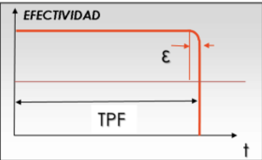

Son
fallas repentinas, las cuales no dan síntomas que advertían de una posible falla en progreso, no dando tiempo suficiente para tomar acciones que eviten la falla funcional y sus consecuencias. Para evitar las conciencias de este tipo de falla, las acciones estarán dirigidas a:
-
•
Instalación de dispositivos de protección.
-
•
Disposición de sistemas de contención.
-
•
Uso de equipos de respaldo o sistemas redundantes.
La implementación o alcance de estas acciones, dependerá de la importancia del sistema o equipo en el proceso, su costo de adquisición o restauración y su impacto sobre el negocio
Para analizar el
impacto en el negocio se deberá analizar los riesgos de afectación en la seguridad, la salud y el ambiente, las perdidas asociadas a la producción y las ventas y los costos de mantenimiento
